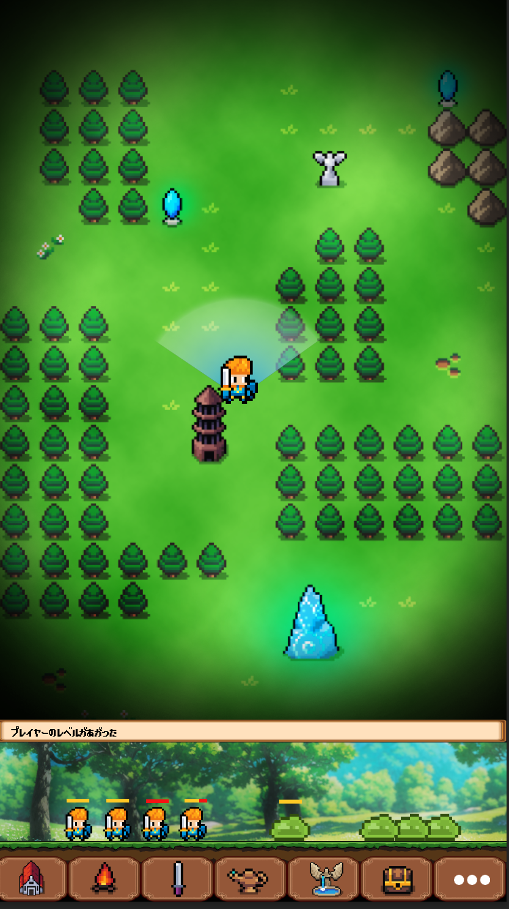
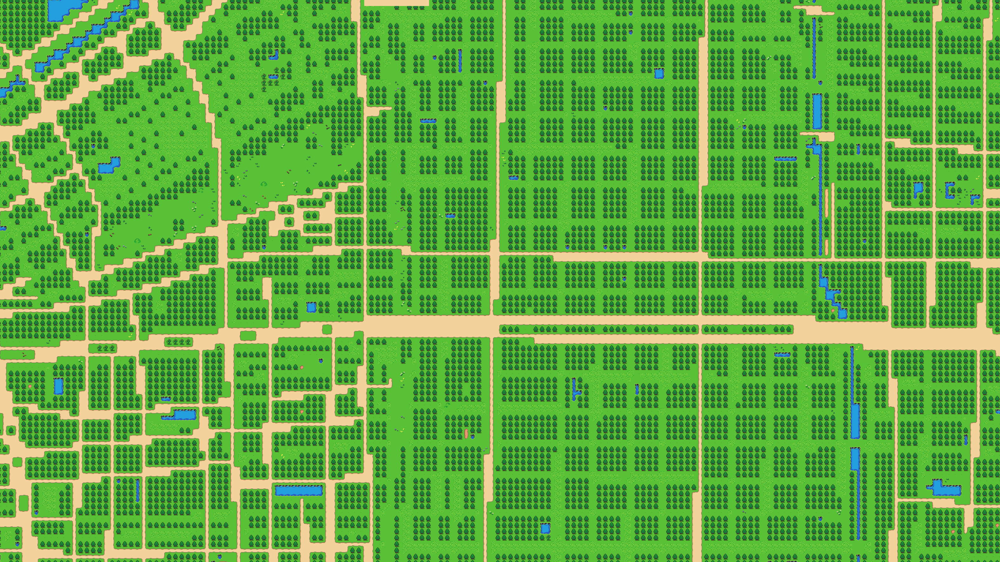
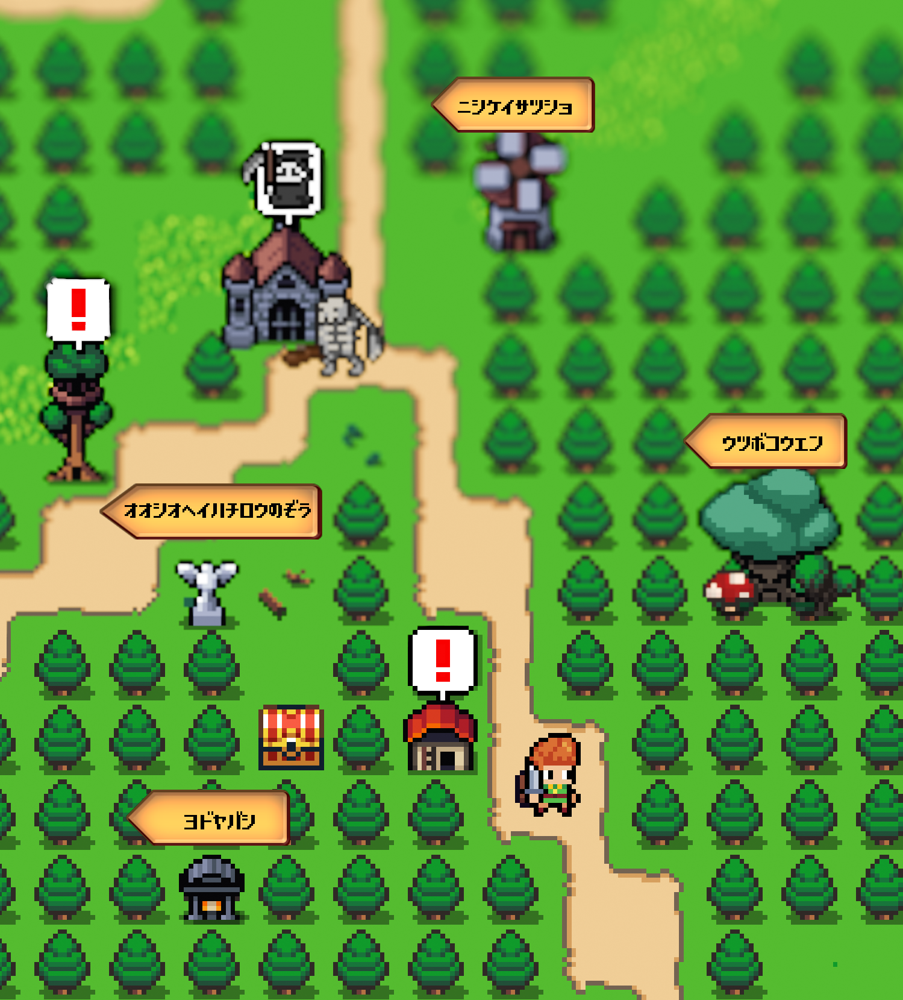
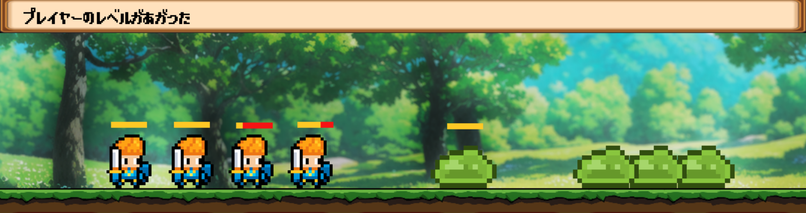

「歩けば冒険、行けなくても派遣。」
現実の日本地図をそのままゲームのフィールドに変換し、実際に歩いて冒険するGPS連動型RPG。
通勤・通学・散歩などの日常移動がそのままボス攻略や探索につながる。
歩けない時間は仲間を遠隔派遣することで、常時プレイを維持できるハイブリッド設計が特徴。
| コアバリュー | 説明 |
|---|---|
| ピクセルアートマップ変換 | 現実の日本を中世JRPG風ピクセルアートマップに変換。歩行に連動してキャラクターが動く |
| ハイブリッド設計 | 「リアル探索（自分が歩く）」と「遠隔探索（仲間派遣）」を融合。自分で歩く方が圧倒的に有利 |
| 日常が冒険へ転化 | 通勤・通学・散歩がボス攻略の準備や宝探しに変わる |

舞台は現実の日本をそのままゲーム世界に変換したフィールド。
チュートリアルのボス戦で、勇者パーティの仲間3人が全国各地に石化・飛散してしまう。
石化の被害は勇者PTだけでなく日本全国の無数の人々にも及んでおり、世界全体が魔物に支配されている状態。
プレイヤーは縁の深い仲間3人を探し出して救出することがメインクエストとなる。
仲間は日本各地のスポット（駅・神殿・公園など）に石化した状態で配置されている。
| フェーズ | 内容 |
|---|---|
| フェーズ1：手がかり収集 | 各地のスポットを訪れて謎かけヒントを集め、仲間の石化場所を絞り込む |
| フェーズ2：現地への旅 | 中継地点でのサブクエストをこなしながら現地へ移動する |
| フェーズ3：現地UNLOCK | 現地クエストをこなして大ボスを解放して撃破し、仲間を救出 |
このゲームには自分で歩くリアル探索と仲間を遠隔派遣する遠隔探索の2軸がある。
自分で歩く方が得られるものは多いが、歩けない時間も派遣で進行できる設計になっている。
詳細: 機能_04_派遣・救助
| 項目 | リアル探索（プレイヤー） | 遠隔探索（仲間派遣） |
|---|---|---|
| スタミナ | 無制限（リアルな体力のみ） | 各仲間固有のスタミナ値で最大移動距離が決まる |
| デスペナルティ | なし（その場で即復活） | あり（敗北地点でお墓化・回収まで再利用不可） |
| 移動手段 | 徒歩・電車・バス・車など | 徒歩移動のみ（実時間がかかる） |
| 詳細マップ | 侵入可能 | 侵入不可（広域マップのみ） |
| 設計意図 | 日常移動への強い動機付け | 常時プレイ性の担保・戦略的な遠隔プレイ |
移動→発見→探索→条件達成→ボス戦、という6段階のサイクルを繰り返す。
01. WALK（歩行・移動）
↓
02. DISCOVER（発見・収集）
↓
03. EXPLORE（探索・調査）
↓
04. UNLOCK（解放・挑戦準備）
↓
05. BOSS BATTLE（ボス戦・制圧）
↓
06. DISPATCH & RESCUE（派遣・救助）← 移動できない時間に並行稼働
| フェーズ | 内容 |
|---|---|
| 01. WALK | プレイヤー自身が移動するか、仲間を派遣して目的地を目指す |
| 02. DISCOVER | 地図上の精霊の祠で経験値を得たり、宝箱を回収する |
| 03. EXPLORE | 詳細マップエリアに侵入し、密度の高い探索を行う |
| 04. UNLOCK | 商店で情報収集・中ボス討伐を経て、大ボスへの挑戦条件を満たす |
| 05. BOSS BATTLE | 駅に到着し、解放された大ボスに挑戦する。事前準備が勝敗を左右する |
| 06. DISPATCH & RESCUE | 移動できない時間は仲間を派遣。死亡した仲間のお墓へ回収に向かう |
OpenStreetMap（OSM）の実際の地図データを取得し、道路・建物・公園・水域などの情報を2Dのマップタイルに自動変換してゲームフィールドを生成する。
現実の地図がそのままRPGの世界になるため、自分の街や通勤路がゲームのフィールドになる。
マップは広大なオーバーワールドと、特定エリアを深く探索する詳細マップの2層構造になっている。

詳細: 機能_00_MAP ENGINE / 機能_03_詳細マップ探索

現実の施設やランドマークがゲーム内のオブジェクトに自動変換される。
詳細: 機能_02_発見・収集
オーバーワールド
| 現実の施設 | ゲーム内表現 | 役割 |
|---|---|---|
| 主要駅・県最大駅 | 王都の城 / 大要塞 | 大ボスが鎮座する最重要拠点 |
| その他の駅 | 宿場町 / 砦 | 中継地点・回復拠点 |
| 地下鉄入口 | 地下迷宮への入口 | 特殊ダンジョンへのアクセスポイント |
| 宗教施設 | 神殿 | イベント（効果詳細未決定） |
| 公園・商業施設 | 魔の森 / 古代遺跡 | 詳細マップへ遷移する探索エリア |
| 銭湯 | 癒やしの泉 | イベント（効果詳細未決定） |
| ポスト等 | 精霊の祠 | 経験値ボーナス・アイテム獲得 |
| 記念碑・碑 | 古代の碑文 | イベント（効果詳細未決定） |
詳細マップ
| 現実の施設 | ゲーム内表現 | 役割 |
|---|---|---|
| ベンチ等 | キノコ | 小規模な体力回復ポイント |
| 店舗 | 商店 / 酒場 | 装備品の購入・情報収集 |
| アトラクション施設 | ボス戦イベント | 中ボス・大ボスとの戦闘 |
日本全国には魔物に石化させられた人々が点在しており、救出することで仲間になる。
また石化を免れた人々がフィールドを自由に行動しており、話しかけることで仲間になる場合もある。
詳細: 機能_04_派遣・救助
| 加入ルート | 内容 |
|---|---|
| 石化救出型 | 全国に約24名配置（8地方×2〜3名）。石化解除薬を使って救出 |
| フィールド遭遇型 | オーバーワールド・詳細マップを行動中のキャラ。会話・戦闘・お使いクエストで加入 |
加入した仲間は派遣・救助（機能_04）で使用可能になる。
敵は3段階の階層で構成されており、大ボスには「解放条件」を満たさないと挑戦できない。
[大ボス] 王都の城 / 大要塞（主要駅・県最大駅）
↑ 解放条件クリアで挑戦可能
[中ボス] 主要スポット（レアアイテム・大ボス鍵所持）
↑
[通常モンスター] オーバーワールド全域（ランダム出現）
大ボスは駅到着だけでは戦えない。以下のいずれかを達成することで挑戦権を獲得する。
| 条件タイプ | 内容 |
|---|---|
| キーアイテム収集系 | エリア内の特定アイテムを一定数集める |
| 中ボス討伐系 | 周辺スポットの中ボスを複数撃破する |
| 探索・訪問系 | 特定スポットを訪問して儀式を進行させる |
| 歩行・周回系 | 物理的な移動距離や滞在時間を満たす |
バトルはすべてオート進行。歩きながら・他の作業中でも快適にプレイできることを重視している。

| 戦略 | 特徴 |
|---|---|
| 手数重視 | 短いリキャストで連続攻撃を狙う |
| 一撃重視 | 長いリキャストで大ダメージを狙う |
| スロット | 数 | 効果 |
|---|---|---|
| 武器 | ×1 | 攻撃力・固有スキル |
| 防具 | ×1 | 防御力・各種耐性 |
| アクセサリー | ×3 | ステータス補正・特殊効果 |
| No. | 機能名 | ファイル | 状態 |
|---|---|---|---|
| 00 | MAP ENGINE | 機能_00_MAP ENGINE | 作成済み |
| 01 | 歩行・移動 | 機能_01_歩行・移動 | 作成済み |
| 02 | 発見・収集 | 機能_02_発見・収集 | 作成済み |
| 03 | 詳細マップ探索 | 機能_03_詳細マップ探索 | 作成済み |
| 04 | 派遣・救助 | 機能_04_派遣・救助 | 作成済み |
| 05 | バトル | 機能_05_バトル | 作成済み |
| ー | UNLOCK（解放条件） | 機能_UNLOCK | 未作成 |
| ー | 仲間・育成 | 機能_仲間育成 | 未作成 |
| ー | インベントリ | 機能_インベントリ | 未作成 |
| No. | 内容 | ファイル | 状態 |
|---|---|---|---|
| 01 | チュートリアル〜本編開始 | ゲームフロー_01_チュートリアル | 作成済み |
| No. | 内容 | ファイル | 状態 |
|---|---|---|---|
| 01 | バトル演出仕様 | 演出_01_バトル | 作成済み |
| 内容 | ファイル | 状態 |
|---|---|---|
| パラメータ設計方針 | params_設計 | 作成済み |
| 内容 | ファイル | 状態 |
|---|---|---|
| バトルモック概要 | モック_バトル概要 | HTML未作成 |